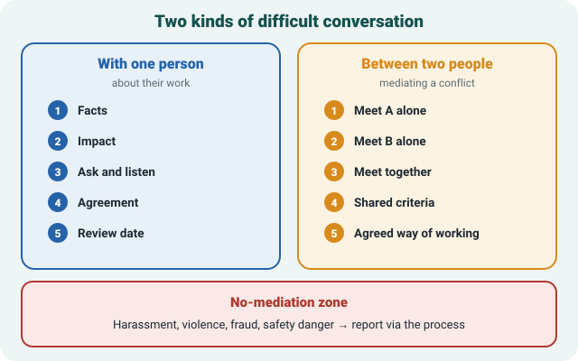

K8 · Teamwork and respecting differences › Level 4 Proficient
Handle conflict and difficult conversations in a team
This lesson completes Sheet 5: Difficult conversation planner. Print template. It builds on Resolve professional disagreements (N4). It teaches conversation skills. It does not replace your organisation's disciplinary process.
1. Objectives
- Prepare a difficult conversation with a 6-step sheet, starting from specific facts.
- Mediate a conflict between two team members: meet each alone, then together.
2. Retrieval warm-up
- What are the four question steps of a coaching one-to-one?
- In which three cases should you instruct directly instead of coaching?
Answers
- Goal, reality, options, next step.
- Urgent work; safety or legal issues; a new person without the basic knowledge.
Review: Listen to coach.
3. Explanation
A difficult conversation involves conflict, strong emotions or big consequences. Examples: someone is not meeting the standard, or two team members refuse to work together. If you avoid the conversation, the problem usually grows.
The planner has 6 steps.
- Facts: what happened, on which dates, with which figures. No labels such as "you're irresponsible".
- Impact: how it affected customers, the team, the results.
- Opening line: one or two sentences that name the topic directly. Do not start with roundabout praise.
- Ask and listen: "How do you see this?" There may be a reason you do not know.
- Find a way together: the other person suggests first, then you add.
- Agreement and review date: who does what, by when, written down.

Mediating between two team members. Meet each person alone first. Hear everything, without judging and without promising to take sides. Then meet together. Restate the shared criteria, such as the client's deadline or product quality. The two agree how they will work, and you write it down.
Stay calm when it heats up. Slow down. Summarise what the other person said. If needed, agree to continue in a few hours. But set a specific time; do not leave it hanging.
The no-mediation zone
- Harassment, violence, threatsProtect the person affected, report through the proper process.
- Fraud, safety dangersStop the work, report to the responsible authority.
- Possible disciplinary mattersFollow your workplace rules, ask HR.
Workplace discipline is governed by labour law and your organisation's rules. This lesson does not cover that process.
4. Workplace example
Hypothetical scenario. Diana manages a warehouse at an electronic components distributor. Ben, a storekeeper with 4 years' experience, has been late for the morning shift 4 times in 2 weeks.
She prepares Sheet 5. Facts: late 4 times, by 20 to 40 minutes, on the 3rd, 5th, 10th and 12th. Impact: two delivery trucks had to wait, and one customer's goods were late. Opening line: "I want to talk about you arriving late for the morning shift these past two weeks."
When she asks, Ben explains that his mother has just gone into hospital, and he takes her meals every morning. Diana summarises and asks how Ben would like to handle it. Ben proposes moving to the afternoon shift for a month. She adds: Ben finds someone to swap with and tells her before the change.
They write down the agreement and set a review in two weeks.
Why this works: she opens with facts, not blame. She asks and listens first, so she learns the real reason. Ben proposes the solution, and there is a review date.
5. Practice
Hypothetical scenario. You lead a design team at an advertising agency. Jake and Lily argue in the team group chat. Jake says Lily sends files late; Lily says Jake keeps changing the brief. The client expects the design on Friday.
Write the steps you will take. Write the opening line for meeting each person alone.
Hint 1
Meet them alone first, or together first? Why?
Hint 2
What shared criterion do both care about?
Model answer
- Today: post in the group chat: "I'll talk to Jake and Lily separately this afternoon. Everyone else, please carry on."
- Meet Jake alone: "I'd like to hear the story of this week's design files, from the beginning."
- Meet Lily alone: the same opening. Hear everything, without promising to take sides.
- Meet together: restate the shared criterion: the client gets the design on Friday, matching the agreed brief.
- Agreement: the brief is fixed in writing before 10:00 on Wednesday; after that, any change goes through the team leader; Lily sends a draft before 17:00 on Thursday.
- Review: after delivery, 15 minutes to look back at how they worked together.
6. Self-check
Choose an answer. Every option has an explanation.
Question 1. Which opening line is best for a conversation about late reports?
-
Not quite. Roundabout praise confuses the listener, and your later praise will be doubted.
-
Correct. Correct. It is short, names the topic directly and rests on checkable facts.
-
Not quite. This labels the person. They will defend themselves instead of looking for a fix.
Question 2. Two team members are in conflict. What should you do first?
-
Not quite. Meeting together while tempers are high often continues the argument, with each side defending itself.
-
Correct. Correct. Meeting alone helps each person speak honestly and calm down before meeting together.
-
Not quite. Avoiding conflict usually lets it grow and affect the whole team.
Question 3. In a one-to-one, an employee says a colleague is sending them harassing messages. What do you do?
-
Not quite. Harassment is in the no-mediation zone. Making them meet could cause further harm.
-
Correct. Correct. This must be handled through the proper process by someone with authority, not mediated.
-
Not quite. Letting it go leaves the person unprotected, and the behaviour may continue.
Question 4. The conversation is heating up, and you feel about to raise your voice. What is sensible?
-
Not quite. Raising your voice adds tension, and the other person hears even less.
-
Correct. Correct. A pause with a set time lets both sides calm down without dropping the issue.
-
Not quite. The problem is still there, and next time it will be even harder to raise.
7. Reflection
- Which difficult conversation are you avoiding? For how long?
- When someone pushes back, do you usually speed up or slow down?
8. Real-world application
In the next 7 days, choose a conversation you are avoiding. Complete Sheet 5. Set a date to talk, and a date to review.
9. Metadata
| skill | K8 · Teamwork and respecting differences |
|---|---|
| level | Level 4 · Proficient |
| group | N5 |
| framework_map | CSfW: 2b Connect and work with others; 2c Recognise and utilise diverse perspectives; SkillsFuture CCS: Collaboration; Communication; NACE: Teamwork; Communication; LifeComp: S1 Empathy; S3 Collaboration (reference only) |
| original | Vietnamese version |
| updated | 2026-11-14 |
Finish the lesson
Mark it as done and the site suggests reviews after 1, 3 and 7 days. The data stays on your device only.
Suggested reviews: